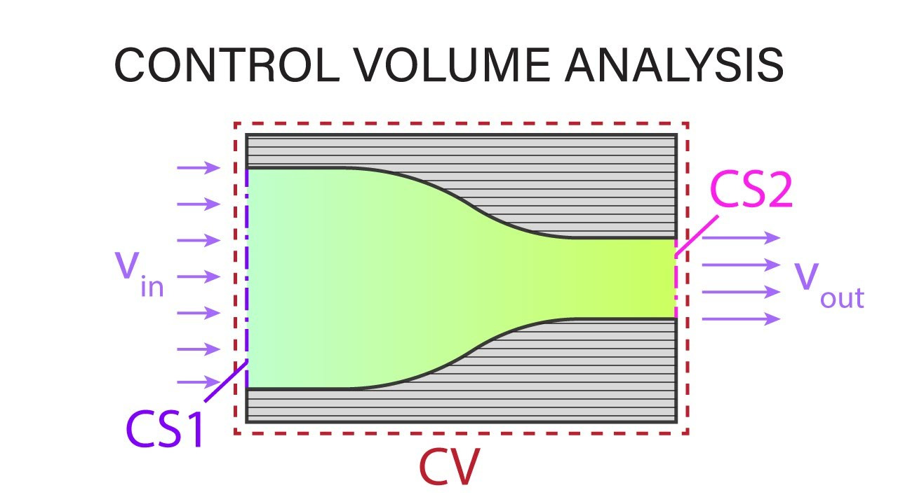
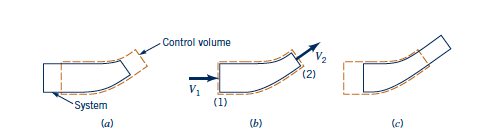
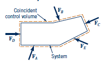
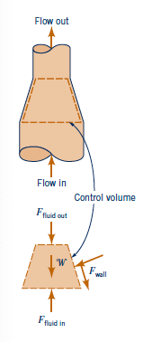

Fluid Mechanics Course
Finite Control Volume Analysis

Francesco Ferri
AAU BUILD
Learning Objectives
- Understand the physical meaning of continuity, momentum, and energy equations
- Derive local and integral forms
- Apply control-volume analysis to incompressible and compressible flows
- Use the method for real engineering applications
Why Control Volume Analysis?
System versus control volume
- System: fixed mass
- Control volume: fixed region in space
- Useful for inlet/outlet flows
Typical problems
- Pipe flows
- Nozzles and diffusers
- Jet forces
- Turbomachinery
Reynolds Transport Theorem
System and Control Volume
A system is a collection of matter of fixed identity.
A control volume is a chosen region of space through which fluid passes.
- Mass can cross the boundary
- Momentum and energy may be exchanged
- The Reynolds transport theorem connects the two viewpoints
Integral Balance
The control-volume formulation expresses the rate of change of a property as:
accumulation + flux out - flux in = sources and sinks

Continuity Equation
Mass Conservation
The continuity equation states that mass is conserved.
In integral form, it gives the balance between inflow and outflow.

General and Integral Forms
Integral form
- Global, control-volume based
- Useful for devices and systems
- Typical engineering design calculations
Differential form
- Local, pointwise form
- Used in theory and CFD
- Leads to the Navier–Stokes equations
Incompressible Flow Special Case
For incompressible flow with constant density, continuity simplifies substantially.
This is commonly used when analyzing nozzles, pipes, and ducts of varying area.
Linear Momentum Equation
Newton's Second Law for a Control Volume
The time rate of change of momentum equals the net force acting on the control volume.
For a fluid, this includes pressure forces, body forces, and momentum fluxes across the boundary.

Momentum Balance
What it includes
- Change of momentum in the volume
- Flux of momentum through inlets/outlets
- Net external forces
Applications
- Jet impact on plates
- Pipe bends and elbows
- Nozzle reaction force
- Pump and turbine forces

Energy Equation
First Law for a Control Volume
The energy equation accounts for work, heat transfer, and changes in internal, kinetic, and potential energy.
It is essential in pumps, turbines, nozzles, and pipe flows.
Engineering Uses
Hydraulic systems
- Pumps and turbines
- Pipe losses
- Nozzle behavior
Thermal systems
- Heat exchangers
- Compressors
- Flow with temperature change
Fluid Mechanics Course
Applications and Summary
Applications
- Pipe flow design and diameter changes
- Nozzle and diffuser calculations
- Ventilation and channel flow
- Hydraulic machines and blood-flow analogies
Takeaway
Finite control volume analysis gives a powerful way to relate global flow quantities to local behavior.
It is the basis for continuity, momentum, and energy balances in practical fluid engineering.